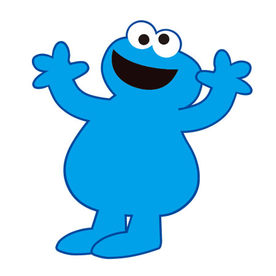
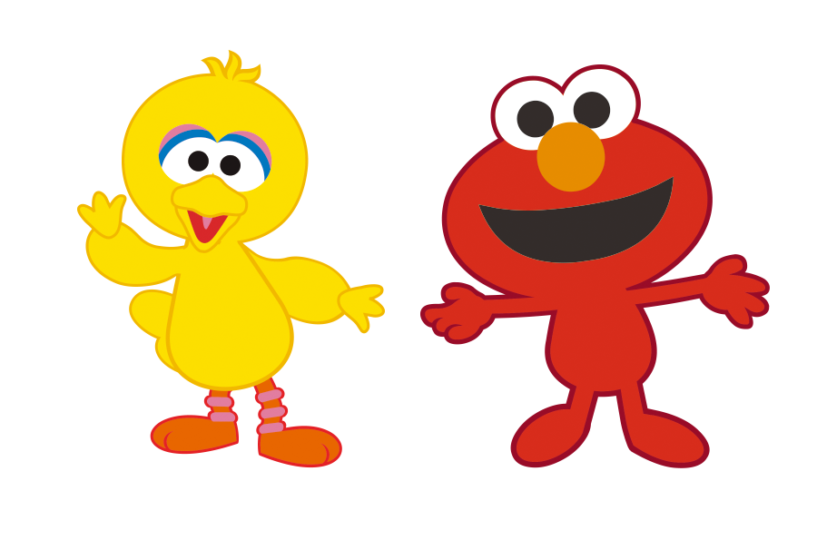

セサミで学ぶ、銀河鉄道の夜。 CREATED BY IWATE ROCKHAND
「セサミストリート」と「銀河鉄道の夜」が夢のコラボ。
エルモの冒険が、始まります。
エルモのお母さんは病気で、まほうの水を飲まないと助かりません。
ケンタウル祭にだけ貰える「まほうの水」をエルモは待ちに待っています。
そんな一人ぼっちのエルモをいつも見守ってくれるビッグバード。
ビッグバードだけがエルモの唯一の友達です。

ケンタウル祭の夜。「まほうの水」を貰える唯一の日。
「まほうの水」を貰おうとした時に、クッキーモンスターに邪魔をされてしまいます。

エルモは結局、「まほうの水」が貰えませんでした。
しかも邪魔をしたグループに、大好きなビッグバードがいたのです。
エルモはがっかりしてしまいます。
エルモは落ち込み、さみしく夜空を眺めていました。
その時、エルモは「銀河ステーション」「銀河ステーション」という不思議な声を聞きました。
気が付くと銀河鉄道の車両に座っていたのです。
そして前の席には、なぜかビッグバードも座っています。
2人の幻想の旅が、いま始まる。

おしまい